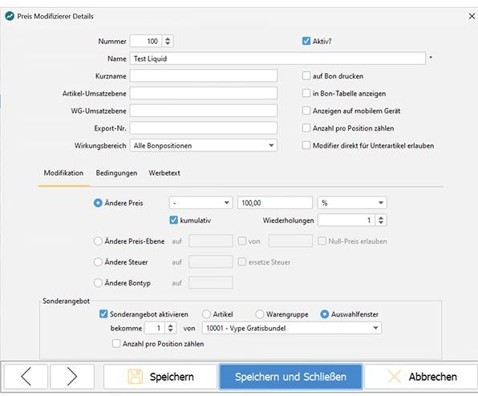
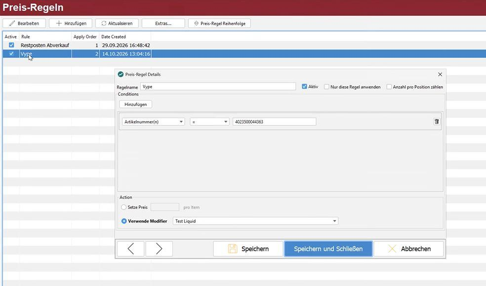

Preise steuern
Drei Werkzeuge, die sich in der Wirkung ähneln und leicht verwechselt werden: Preis-Regeln, Preis-Modifier und Aktionspreise.
Welches wofür
| Werkzeug | Wirkt | Typischer Fall |
|---|---|---|
| Preis-Regeln | automatisch, sobald die Bedingungen zutreffen | Happy Hour, Mengenstaffel, „4 kaufen, 1 gratis" |
| Preis-Modifier | wenn der Bediener sie auslöst | Rabatt, Mitarbeiterpreis, Außer-Haus-Steuer |
| Aktionspreise | im hinterlegten Zeitraum, je Filiale | Wochenangebot ohne angebundene Warenwirtschaft |
Preis-Regeln
Eine Regel besteht aus Bedingungen und der Preisänderung. Mehrere Bedingungen je Regel sind möglich.
Bedingungen prüfen unter anderem: Zeitpunkt der Buchung, Zeitpunkt der Belegeröffnung, Stückzahl, Preisebene, Steuer, Artikel, Artikelnummern, Warengruppe, Hauptgruppe, Belegtyp, Filialnummern, Kassennummern, Stichworte, Modifier, Auswahlfenster, Tischname und Summe.
Operatoren sind unter anderem =, in, starts with, ends with, multiple of sowie die Vergleiche größer und kleiner. starts with 10 trifft Warengruppe 10, 100 bis 109 und 1000 bis 1099. multiple of 3 greift bei 3, 6, 9 und so weiter; die Variante mit Stern greift nur beim erstmaligen Erreichen.
Wichtige Schalter:
- Nur diese Regel anwenden — verhindert, dass sich mehrere zutreffende Regeln aufaddieren.
- Aktiv — deaktivierte Regeln greifen nicht mehr, bleiben aber gespeichert und lassen sich später wieder einschalten.
Der eingetragene Preis gilt je Stück, nicht für die Gesamtmenge. Für „10 Brötchen zusammen 3 Euro" wird 0,300 eingetragen, nicht 3,00.
Kassennummern können in verschiedenen Filialen mehrfach vorkommen. Eine Regel, die nur auf die Kassennummer prüft, trifft deshalb möglicherweise auch Kassen anderer Filialen — Filialnummer mit angeben.
Der Zeitpunkt der Buchung greift auch dann, wenn der Beleg vorher eröffnet wurde: Wird ein Tischbeleg um 20:15 Uhr geöffnet und um 22:30 Uhr eine Position gebucht, gilt eine Happy-Hour-Regel für 22:00 bis 23:00 Uhr. Soll das nicht so sein, ist stattdessen der Zeitpunkt der Belegeröffnung zu prüfen.
Preis-Modifier
Ein Modifier wird vom Bediener ausgelöst und kann Preis, Preisebene, Steuer oder Belegtyp ändern.
Wirkungsbereich — die aktuelle Position, alle bisherigen Positionen, alle folgenden Positionen mit oder ohne die aktuelle, oder die Belegsumme.
- Ändere Preis — als Betrag oder als Prozentsatz.
- Ändere Preis-Ebene — mit optionaler Einschränkung, aus welcher Ebene geshiftet wird.
- Ändere Steuer — mit Bedingung, etwa nur von 7 % auf 19 %. So bleiben steuerneutrale Artikel wie Gutscheine unberührt.
- Ändere Bontyp — auf eine angegebene Belegtypnummer.
- Angebot — kaufabhängige Preisänderung auf denselben oder andere Artikel, mit Stückzahlgrenzen.
Weitere Felder: ShortName für den Belegdruck, Unique No für die Zuordnung im Designer, Export-Key sowie Umsatzebenen für Artikel und Warengruppe — die beiden letzten wirken nur auf Exporte über den GoodCompanyDaemon, nicht auf den Kassenumsatz.
Damit ein Modifier auf einem mobilen Bestellgerät zur Verfügung steht, muss die Option Anzeigen auf mobilem Gerät gesetzt sein. Ohne sie greift er dort nicht — eine häufige Ursache für „der Rabatt fehlt auf dem Orderman".
Beispiel: Gratisartikel zum Hauptartikel
Beim Kauf eines bestimmten Artikels erhält der Kunde einen Artikel aus einem Auswahlfenster gratis, etwa ein Liquid zum Vaporizer. Der Bediener scannt beide Artikel; die Kasse rechnet den Rabatt automatisch ein.
- Auswahlfenster mit allen Artikeln anlegen, die als Gratisartikel in Frage kommen.
- Preis-Modifier anlegen:
- Wirkungsbereich: Alle Bonpositionen
- Ändere Preis:
-100,00%, kumulativ, Wiederholungen1 - Sonderangebot aktivieren → Auswahlfenster, bekomme
1von [Auswahlfenster aus Schritt 1]
- Preis-Regel anlegen:
- Bedingung: Artikelnummer(n)
=[Artikelnummer Hauptartikel] - Aktion: Verwende Modifier → [Modifier aus Schritt 2]
- Aktiv setzen
- Bedingung: Artikelnummer(n)


Verhalten an der Kasse: Stehen Hauptartikel und ein Artikel aus dem Auswahlfenster auf dem Bon, wird der erste Artikel aus dem Auswahlfenster mit 0,00 € berechnet. Jeder weitere wird normal berechnet. Der Gratisartikel bleibt eine eigene Bonposition.
Aktionspreise
Für zeitlich befristete Filialaktionen ohne angebundene Warenwirtschaft.
Je Aktion werden vergeben: Aktionsnummer (eindeutig, nicht zwingend fortlaufend), Aktionsname, Zeitraum mit Start- und Enddatum sowie die Artikel mit ihrem Aktionspreis.
Je Filiale und je Artikel ist eine eigene Zeile nötig. Eine Aktion in drei Filialen bedeutet drei Zeilen je Artikel. Ohne Enddatum läuft die Aktion unbefristet weiter — bei Wochenaktionen immer ein Enddatum setzen.
Über einen Schalter vor der Filiale lässt sich die Aktion je Filiale ein- und ausschalten, über den Schalter Aktiv die gesamte Aktion.
Ergebnis prüfen
An einer Kasse den Fall buchen und den Beleg ansehen: Der geänderte Preis muss dort erscheinen, und bei aktivierter Option auch der Modifier-Kurzname.
Weitere Informationen
- ITR Partner Service → Produkte → Stammdaten pflegen und verteilen
- ITR Partner Service → Produkte → CentralPoint → Bundle-Artikel einrichten – mehrere Produkte mit einem Scan zum Festpreis